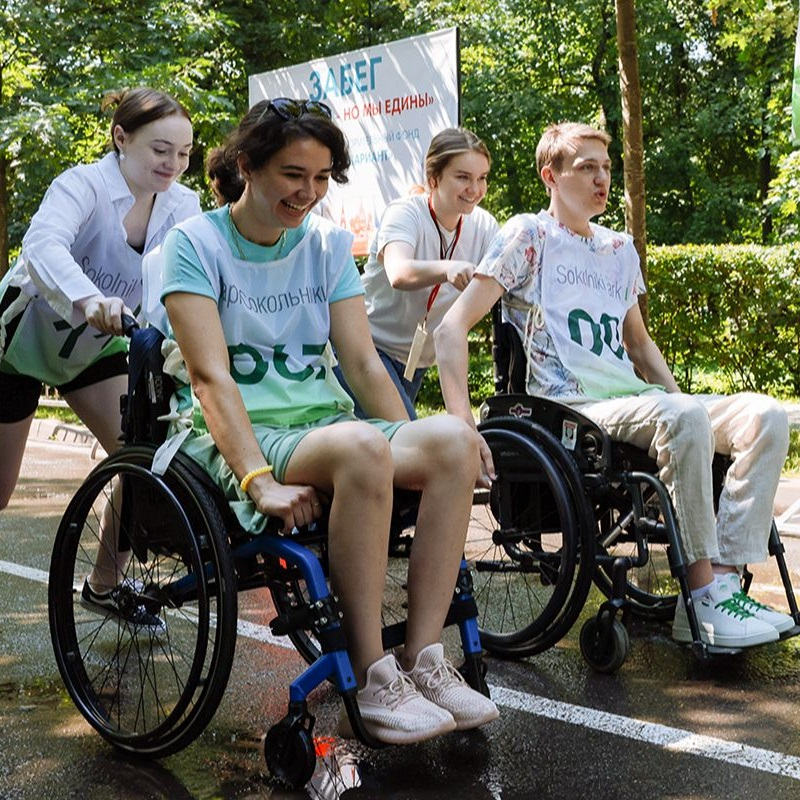

🌟 Инновационный проект
Наш сервис предлагает уникальную онлайн-карту, которая помогает людям с ограниченными возможностями здоровья (ОВЗ) оставлять заявки на получение услуг в их городе, а волонтёрам — быстро и удобно отслеживать нуждающихся поблизости.
🤝 Сотрудничество с МосВолонтёр
Для достижения максимальной эффективности и охвата мы сотрудничаем с организацией МосВолонтёр. Это партнерство позволяет:
- Привлекать волонтеров для помощи людям с ОВЗ.
- Расширять сеть поддержки.
- Обеспечивать широкий доступ к услугам.
♿ Создание доступной среды
Главная цель проекта — создание доступной среды для людей с ОВЗ. Мы работаем над тем, чтобы:
- Нуждающиеся могли быстро получить помощь.
- Волонтёры получали опыт взаимодействия с разными слоями населения.
🎓 Сервис, созданный студентами
Проект разработан инициативной группой студентов Московского Политехнического университета, которые стремятся сделать мир более доступным. Молодые специалисты из разных областей объединили усилия для создания платформы, отвечающей актуальным запросам людей с ОВЗ. 